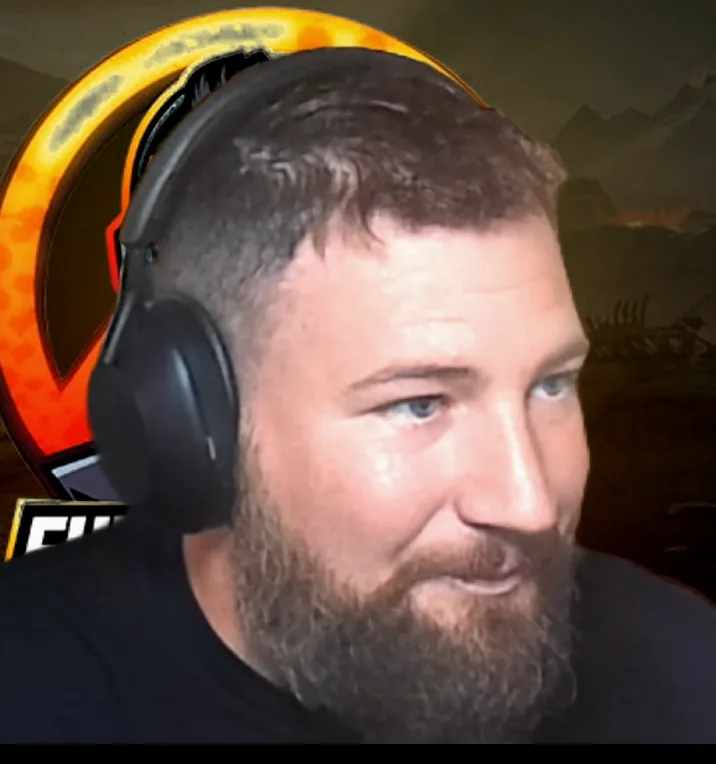

Twitch
If I’m live, load the player here or open Twitch in a new tab. Twitch-only viewers can stay on this path — YouTube is optional.

YouTube
Prefer YouTube? Open the channel for VODs, uploads, and subscribe progress. You do not need Twitch to watch here.
Also useful
After you pick a platform, Discord and build videos are the next stops.
Free Borderlands 4 modded weapons
Connect with FunkYouSHiFT on Discord, YouTube, or Twitch for free BL4 gear events and community help.
Explore free BL4 modded gear